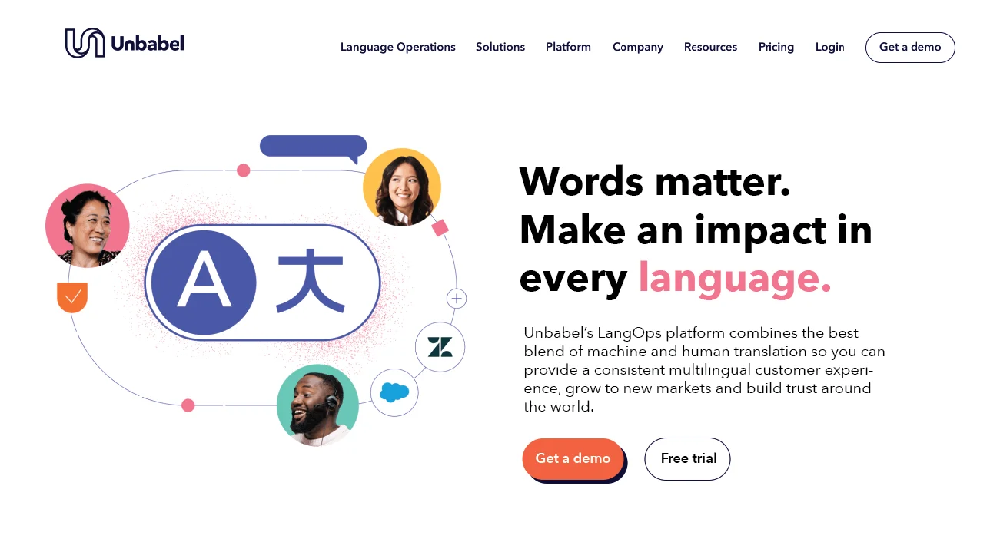
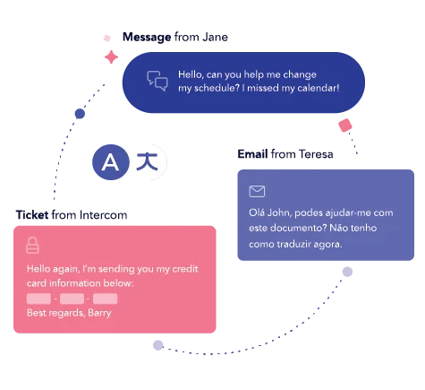
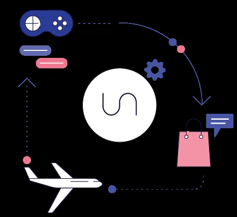
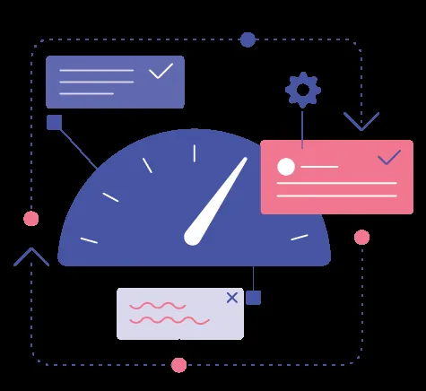
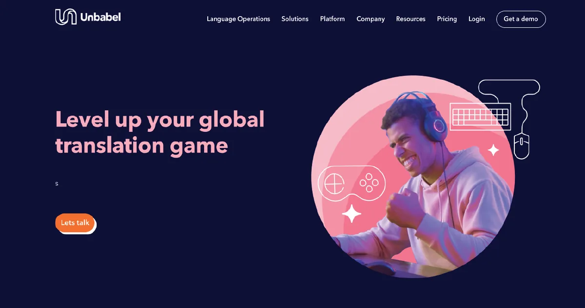

Unbabel Site

PROBLEM: Unbabel's website wasn't keeping pace with the sophistication of their AI-driven translation product. The story was muddled, the visuals were inconsistent, and the team was stuck in a cycle of reactive, ad hoc revisions with no clear creative direction.
SOLUTION: Brought strategic creative leadership to the team — sharpening the storytelling, elevating the design, and shifting the team from reactive patchwork to proactive seasonal campaigns with a unified visual voice.
ROLE: Creative Director

How We Did It
Sharpened the story from the top down
Brought in an advertising-savvy copywriter and worked directly with marketing to untangle the messaging. Rewrote headlines, generated sketches, and pushed the team to communicate Unbabel's nuanced AI translation offering with clarity and confidence.
Invested in the team's growth
Promoted two junior designers to senior and worked with them to develop a distinctive visual voice within the brand. Leveraged the creative strengths and institutional knowledge of a senior IC based in Europe while encouraging him to take an active mentorship role with the broader team.
Rebuilt the creative process
Partnered with the PM to track changes, tighten handoffs, and ensure the right people were looped in at the right time. Shifted the team from ad hoc revisions to structured seasonal updates — without losing momentum or creative quality along the way.



Impact
Delivered a website that clearly communicated Unbabel's complex AI-driven translation offering to enterprise buyers
Shifted the team from reactive, ad hoc work to structured, proactive seasonal campaigns
Elevated two designers to senior level while maintaining high creative output and team morale
Strengthened cross-functional relationships between creative, marketing, and product

PARTNERS: Brent Hurlbert (Senior Designer), Tom Groom (Senior Designer), Bruno Silva (Illustrator & Art Director), Griff McLaughlin (Junior Designer), Max Kaufman (Project Manager), Phil Hunter (Copywriter)